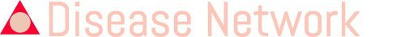

Information
Click on the Node/Edge for additional information.
Filter
Sample size:
min: (
) max: (
) Range from:
to:
Adjusted P-value (<=):
Exponentiated Coefficients (>=):
filter
Shortest path
Find
Display
Network
:
Graph
Table
Select layout
grid
preset
random
circle
concentric
breadthfirst
cose
Change dimensions
800x600
1000x800
1200x1000
1400x1200
Condition
In-degree
Out-degree
Total degree